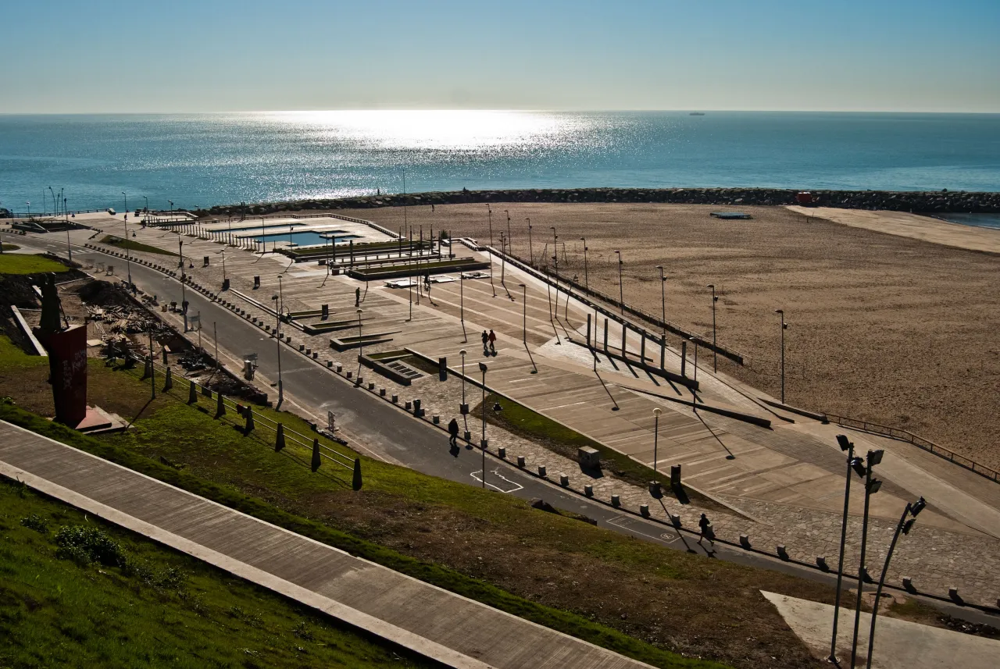

Historia de la ciudad
Mar del Plata, apodada "La Ciudad Feliz", evolucionó de un pequeño
establecimiento saladeril a convertirse en el principal balneario y
puerto pesquero de Argentina.
Conocé más de la feliz.
